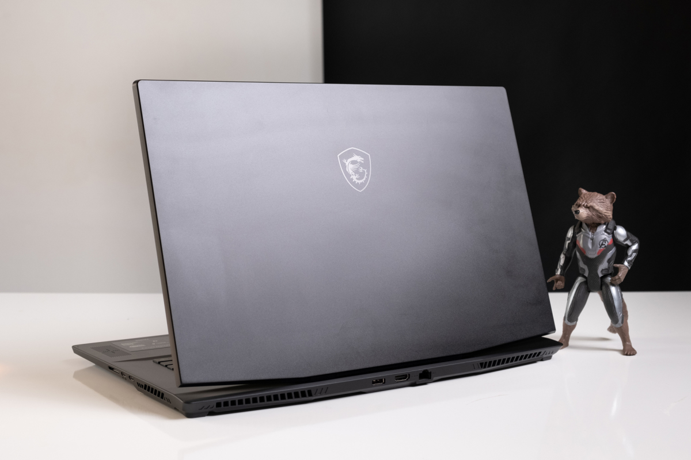
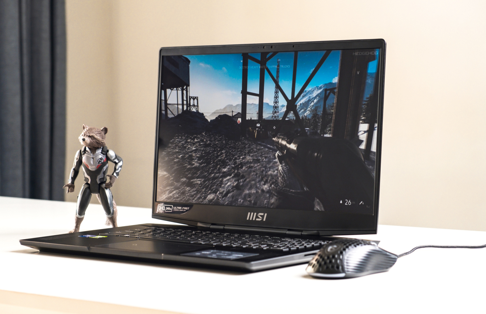
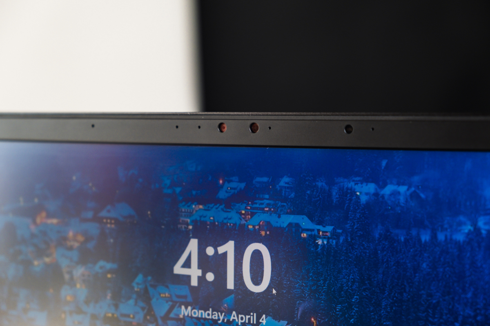
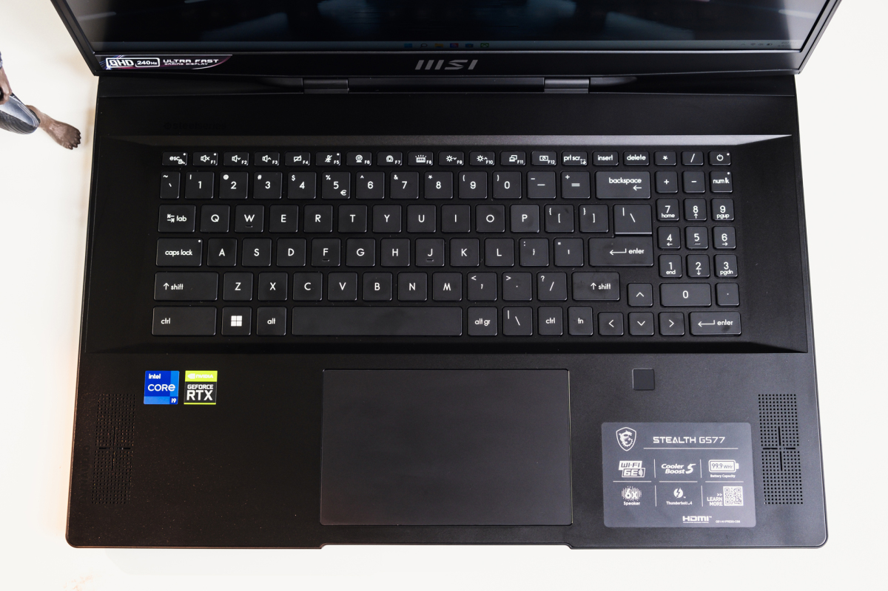
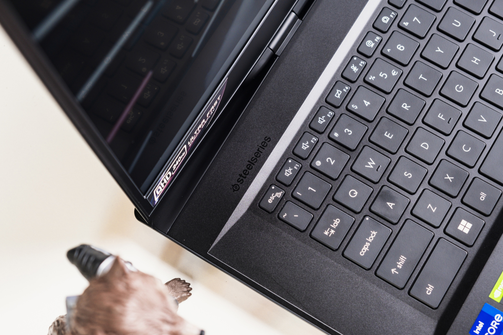
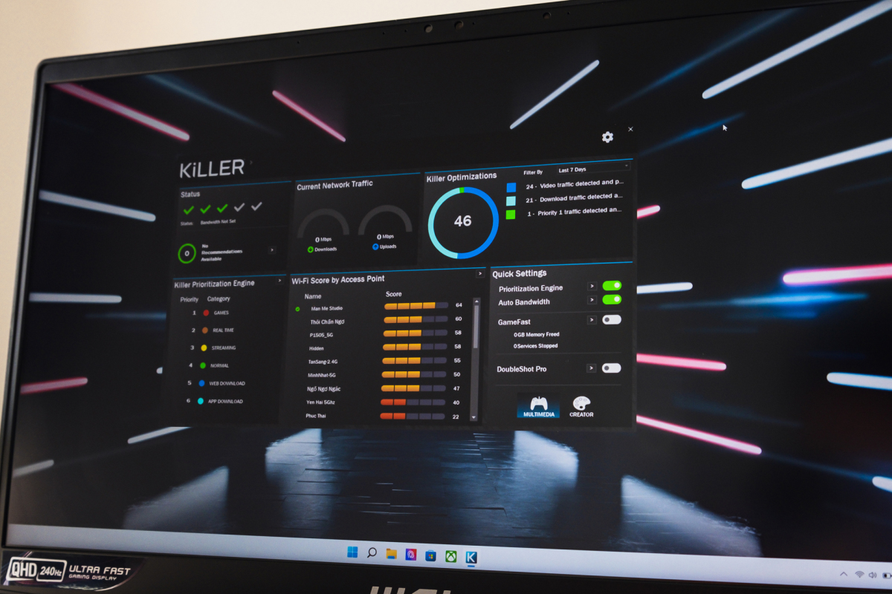
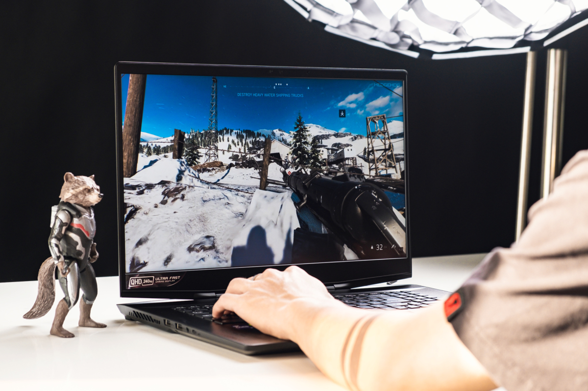

Chủ nhật, 10/4/2022, 06:00 (GMT+7)
MSI Stealth GS77 - laptop chơi game giá 89 triệu đồng
Stealth GS77 là laptop chơi game mạnh hàng đầu tại Việt Nam với chip Core i9 mới nhất, RAM 32 GB và độ mỏng 2 cm.

Không giống Raider series với các nét "hầm hố" dành cho game thủ, Stealth GS77 được MSI giới thiệu là dòng laptop hiệu năng cao, phù hợp với mục đích làm việc lẫn chơi game. Vì vậy, máy có độ mỏng nhẹ, tính di động và các đường nét không quá nổi bật, phù hợp nhiều mục đích sử dụng của người dùng. Dễ thấy nhất là logo rồng quen thuộc nhưng được thiết kế chìm lẫn trong bề mặt kim loại sần.
Tại Việt Nam, Stealth GS77 là đối thủ chính của ROG Strix SCAR 17. Cả hai có nhiều điểm tương đồng về cấu hình nhưng khác biệt về triết lý thiết kế khi sẩn phẩm Asus hầm hố hơn còn model của MSI nhỏ gọn hơn.
Tính di động vốn là điều xa xỉ với các mẫu laptop màn hình tới 17 inch. Nhưng ở mức 2,8 kg và độ mỏng hơn 2 cm, MSI Stealth GS77 vẫn có thể đem theo mà không gây quá nhiều trở ngại cho người dùng. Đây cũng là lựa chọn laptop chơi game 17 inch mỏng nhẹ hàng đầu hiện nay. Đa số các đối thủ đều nặng khoảng 3 kg, nhẹ nhất là ROG Strix SCAR 17 cũng nhỉnh hơn một chút là 2,9 kg.
Do thiết kế mỏng, GS77 được MSI đầu tư nhiều cho hệ thống tản nhiệt với công nghệ Cooler Boost 5.
Các khe tản được bố trí xung quanh bốn cạnh máy cùng 6 ống dẫn nhiệt, 2 quạt với cánh quạt mỏng nhất thế giới hiện nay là 0,1 mm.
Trong một số thử nghiệm thực tế, khi sử dụng thao tác dựng video, chỉnh sửa ảnh, máy chỉ ấm nhẹ ở mức chấp nhận được.
Khi chơi game nặng, cần sự hỗ trợ của giá đỡ để giảm nhiệt.

Màn hình là trang bị nổi trội của GS77 so với các đối thủ. Cũng với kích thước 17,3 inch, độ phân giải QHD nhưng máy có tần số quét 240 Hz, cao nhất hiện nay trên laptop chơi game ở Việt Nam. Các cạnh bên cũng được thiết kế mỏng, tăng độ thẩm mỹ và có thêm lớp chống lóa. Ngoài ra, màn hình hỗ trợ hiển thị 100% dải màu DCI-P3 cho những người làm việc sáng tạo nội dung hoặc giải trí.

Không giống laptop game thông thường, sản phẩm của MSI có hệ thống webcam chất lượng cao Full HD, hỗ trợ hồng ngoại để nhận diện khuôn mặt cho tính năng Windows Hello. Bên cạnh đó là hệ thống microphone khử ồn cho họp, học trực tuyến. Với webcam, người dùng có thêm nút khóa vật lý ở cạnh bên để đảm bảo tính riêng tư.
Bàn phím trên GS77 được MSI hợp tác sản xuất với công ty phụ kiện game danh tiếng SteelSeries. Máy có đèn nền RGB cho từng phím, được điều chỉnh qua phần mềm riêng. Các phím điều hướng với kích thước tiêu chuẩn cũng là điểm cộng cho các game thủ sử dụng trực tiếp. Ngoài ra, máy có cảm biến vân tay một chạm ở phía dưới.
So với thế hệ trước, GS77 có có bàn di lớn hơn 50% và bề mặt phím lớn hơn 8%. Trải nghiệm thực tế cho thấy tốc độ nhận cảm ứng nhanh, đặc biệt là các thao tác đa chạm được xử lý tốt.

GS77 là một trong những laptop đầu tiên trang bị chip Core i9-12900H mạnh và mới nhất tại thị trường Việt Nam.
Ngoài ra, máy sử dụng card đồ họa GeForce RTX 3080 Max Q 8 GB GDDR6, bộ nhớ SSD 2 TB PCIe Gen4x4 và RAM 32 GB DDR5. Người dùng cũng có thể lựa chọn giữa hai công nghệ Discrete Graphics Mode hoặc NVIDIA Optimus để phù hợp với nhu cầu cần hiệu năng hay hiệu quả về thời lượng pin.
Laptop mới của MSI trang bị đầy đủ cổng kết nối cao cấp gồm một hai cổng USB-C, trong đó có một hỗ trợ Thunderbolt 4 và sạc Power Delivery, hai cổng USB-A 3.2 tiêu chuẩn, một cổng LAN, khe cắm thẻ nhớ SD và HDMI hỗ trợ xuất hình ảnh 8K 60 Hz.
Cạnh máy được thiết kế với nhiều nét cắt góc cạnh sắc và độ mỏng ấn tượng với một mẫu laptop game cỡ lớn là 2 cm.

Phần mềm điều chỉnh hiệu năng, thông số cho phù hợp với nhu cầu sử dụng khác nhau. Máy hỗ trợ Wi-Fi 6E mới và cao cấp nhất trên laptop hiện nay. GS77 có pin dung lượng lớn 99,9 Whr, cho thời gian sử dụng theo một số thử nghiệm thực tế là gần 7 tiếng với các nhu cầu đơn giản như văn phòng. Để có hiệu năng mạnh nhất cho game, người dùng vẫn cần kết nối bộ sạc 240 W đi kèm.

MSI Stealth GS77 có nhiều phiên bản tùy thuộc cấu hình, tần số quét và độ phân giải màn hình. Tại Việt Nam, hãng mới chỉ bán một phiên bản cấu hình cao nhất với giá 89,9 triệu đồng.
Tuấn Hưng - Quang Đồng